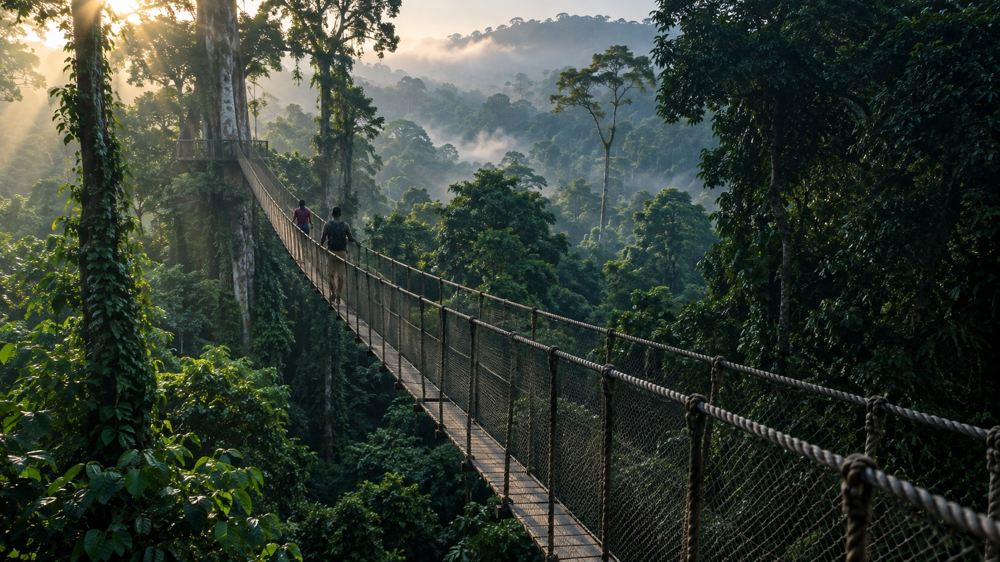
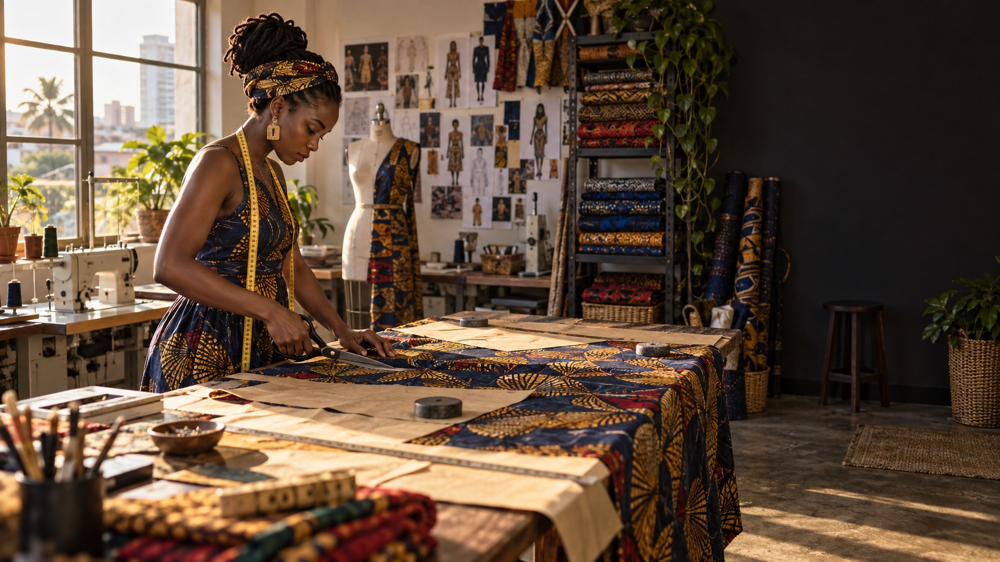

Ghana is not one story.
We connect the country’s defining places with the people building what comes next.

See Ghana
from above.
Seven suspension bridges carry you over a rainforest that has been growing its own stories for centuries.
Find your region ↗Curated by people who know
Region 01 / 16
Greater
Accra
Coastal history, studio culture, late-night food and neighbourhoods that shift mood from block to block.
1.0232° W

Know the hands
behind the work.
Not a faceless directory. A place for Ghana’s independent designers, cooks, makers and founders to be discovered on their own terms.
Add a local business ↗One link in.
A story comes out.
Business owners should not need to write perfect copy or complete a twenty-field form. GhanaNice’s AI reads the signals, structures the essentials and prepares a listing for human approval.
Kofi & Co. Leather
Hand-finished leather bags and everyday accessories, designed and made in Accra with a focus on durable materials and thoughtful detail.
Come for the places.